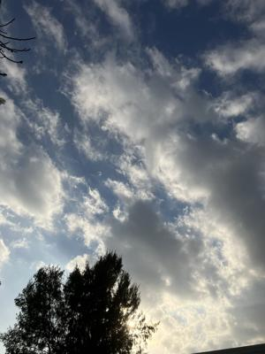
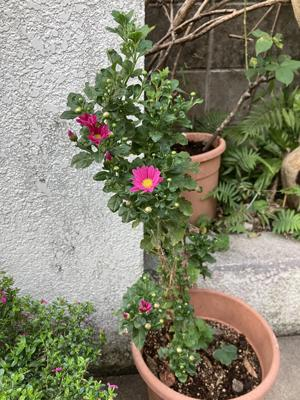
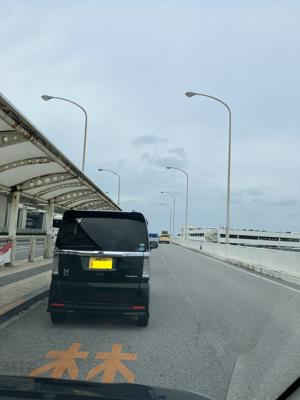

うるがいの話 ある日
最新: Spotifyスポティファイ【うるがいの話 ある日】とは 一日だけのプログです
『うるがいの話』の最新一日だけのプログで、通信料が少なく経済的だ。カニの画像をクリックすると全ての日付が載る『うるがいの話』サイトを表示します
|
|
【うるがいの話】 うるがい(ｳﾙｶﾞｲ urugai)とは、『もずくがに』の名前でとても大きくなります。 |
|---|---|
|
|
【カミマヤーの話】 猫のことを方言でマヤーといいます。カミマヤー（kamimayaa）とは、神の猫のことです。 |
|
【たながぁの音楽】 たながぁ（ﾀﾅｶﾞｰ tanagaa）とは手長えびのことで、何種類かあり大きいのは車 エビぐらいになります。 |

|
【ぶながぁの話】 ぶながぁ(ﾌﾞﾅｶﾞｰ bunagaa)とは、赤い髪の毛、赤い身体、そして身長は１ｍ２０ｃｍ ぐらい、川の蟹を食べているの目撃された。場所は沖縄県国頭郡大宜味村のと ある村僕の隣近所に住んでいる爺さんから、聞いた話です。 |
|
|
【ギーマの話】 ギーマ(giima)とは、山原の里山に咲くスズランに似た、 花を付けます。実は食べられます、 気が付くと口の周りが紫になっています。 |
2025年12月19日 (金）Spotifyスポティファイ
15:56

『私の声が聞こえるのは、あなたが無料のスポティファイを聞い
ているからなんです』という声が、クラシックの音楽に割り込む
、近頃はマジなコマシャルまで入り込んできた。（有料だと月千
円）
Spotifyの広告が異様に増えているのですけど、皆さんもそうな
のでしょうか？
ネットで調べてみると、1時間に2、3回の広告が流れると書いて
あることが多いのですが、僕の場合、なぜかたった十分の間に
2、3回。しかも一回あたり２つから３つの広告が流れることも
しばしば。
普段は、ＮＨＫのクラシックのＦＭ放送を聞くのだが、近頃はオ
ペラが多く、その時はスポティファイを聞いているが、何だか割
り込みが多くイラだってきた。ネットで、無料で聞けるアプリを
探して利用することにした。
色々な音楽をランダムに聞きたい方におすすめなアプリですとい
う「クラシックラジオ」を聞き始めた。
家の小菊の花が咲いた

１３：５１分、コドモを空港へ送った。
